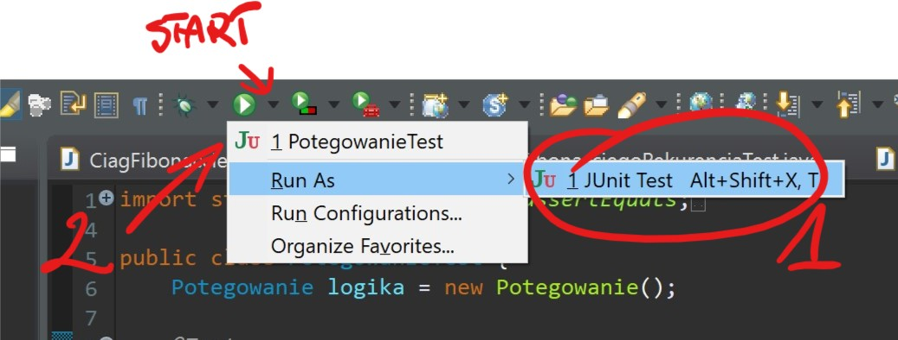

Wykonaj fork projektu basic-exercises. Przy pomocy git ściągnij swoją wersję projektu do workspace, a następnie zaimportuj do Eclipse jako:
Pod tytułem każdego z zadań znajduje się nazwa pliku w którym należy wykonać zadanie
Każdy klasa do uzupełniania (katalog src), posiada odpowiednią klasę do jej przetestowania (katalog test)
Testy uruchamiamy w ten sam sposób co normalną klasę zawierającą metodę main, klikając run
W przypadku problemów z uruchomieniem należy wybrać opcje szczegółowe zgodnie z:
Wyniki testów możemy zobaczyć w widoku JUnit, w przypadku jego braku można go wyświetlić przez menu Window>Show View>Other>JUnit
W przyszłości będziemy używali unit testów (testy jednostkowe) aby spradzić działanie pisanych aplikacji.
Tym razem jednak dodałem do każdego testu drukowanie jego wyników do konsoli
(*) oznaczono zadania dodatkowe
Potegowanie.java
Podnosimy pierwszą przekazaną wartość do potęgi w wysokości drugiej
PierwiastekKwadratowyLubZero.java
CiagFibonacciego.java
Wyznaczenie n-tej liczby Ciągu Fibonanacciego
CiagFibonacciegoRekurencja.java
CzyLiczbaPierwsza.java
LiczbyPierwsze.java
Wynikiem działania metody ma być tablica liczb całkowitch ( int[] ) zawierająca wszystkie liczby pierwsze z przedziału [0..maksimum]
{kind=link}
{kind=link}
{kind=link}
{kind=link}